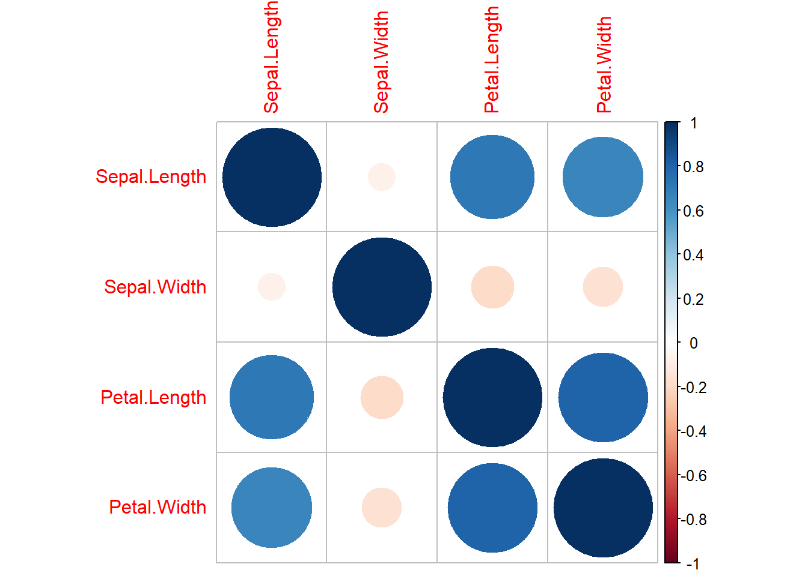
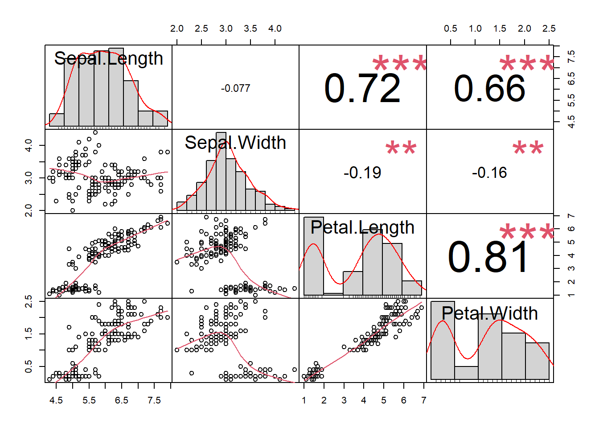

Chapitre 6 Statistiques univariées
6.1 Variables quantitatives
6.1.1 Mesurer les valeurs centrales
En gros, la tendance centrale mesure la “moyenne” ou le “milieu” de vos données.
La moyenne : la valeur moyenne. Elle est sensible aux valeurs aberrantes.
mean()La médiane : la valeur moyenne. C’est une alternative robuste à la moyenne :
sd()mode : la valeur la plus fréquente :
mfv()
On peut cacluer la moyenne pondérée avec la fonction weighted.mean().
Si les vecteurs contiennent des données manquantes (NA), ajouter
l’argument na.rm=TRUE aux fonctions mean() et median(). La
fonction mod() gère par défaut les données manquantes.
Les valeurs inhabituelles, appelées valeurs aberrantes, peuvent avoir davantage d’impact sur la moyenne que sur la médiane. Si vos données sont symétriques, la moyenne et la médiane sont similaires.
##
## Attachement du package : 'dplyr'## Les objets suivants sont masqués depuis 'package:stats':
##
## filter, lag## Les objets suivants sont masqués depuis 'package:base':
##
## intersect, setdiff, setequal, union## # A tibble: 3 × 2
## Species `weighted.mean(Sepal.Length, Petal.Length, na.rm = TRUE)`
## <fct> <dbl>
## 1 setosa 5.02
## 2 versicolor 5.98
## 3 virginica 6.646.1.2 Les indicateurs de dispersion
Un indicateur de dispersion mesure la variabilité des valeurs d’une série statistique. Il est toujours positif et d’autant plus grand que les valeurs de la série sont étalées. Les plus courants sont :
la variance :
var()l’écart-type :
sd()l’écart interquartile :
IQR()
La variance représente l’écart moyen au carré par rapport à la moyenne. L’écart-type est la racine carrée de la variance. Il mesure l’écart moyen des valeurs, dans les données, par rapport à la valeur moyenne.
L’écart-type est utilisé comme mesure de la dispersion lorsque la moyenne est utilisée comme mesure de la tendance centrale (c’est-à-dire pour des données numériques symétriques). Pour les données ordinales ou les données numériques asymétriques, on utilise la médiane et l’écart interquartile.
Les quantiles divisent en 4 les données. L’écart interquantile (Interquantile Range – IRQ) correspond à la différence entre le premier et le troisième quantile. Il peut être une robuste alternative à l’écart-type. L’écart interquantile est souvent utilisé avec la médiane et est assez robuste aux valeurs aberrantes.
On peut également calculer les déciles : au lieu de séparer en quatre en sépare en 10.
Les paramètres de dispersion donnent une indication de la variabilité des données, tandis que l’intervalle de confiance et l’erreur standard donnent une indication de la précision d’un paramètre de position.
En particulier, la taille d’une série de données n’a pas d’impact sur sa dispersion (la variabilité n’augmente ou ne diminue pas avec le nombre d’individus) mais en a un sur la précision des paramètres de position (cette précision augmente avec le nombre d’individus).
6.1.3 Intervalles de confiance et erreur standard
L’intervalle de confiance et l’erreur standard permettent d’estimer la précision d’une grande variété de paramètres. Les trois cas les plus courants sont une moyenne, une médiane (pour laquelle seul l’intervalle de confiance a du sens) et une proportion.
Pour toutes les fonctions calculant un intervalle de confiance, la
précision de cet intervalle peut être modifiée grâce à l’argument
conf.level (par défaut conf.level=0.95, ce qui calcule l’intervalle
de confiance à 95 %).
Moyenne :
Intervalle de confiance :
n >= 30 :
t.test(serie)$conf.int. Paramétrique où serie est un vecteur contenant la série de donnéesn < 30 :
bootstrap(serie,function(x,i) mean(x[i])). Non paramétrique
Erreur standard :
se()(quelque soit l’effectif)
Médiane :
Intervalle de confiance :
Si la série de données ne contient pas de 0 et quel que soit l’effectif :
wilcox.signtest(serie)$conf.int1Si la série de données contient au moins un 0 et quel que soit l’effectif :
wilcox.signtest(serie,mu=valeur)$conf.intoù valeur est une valeur quelconque absente de la série de données
Proportion :
Intervalle de confiance :
- Quelque soit l’effectif :
binom.test(a,b)$conf.intoù a est le nombre d’individus de la catégorie d’intérêt et b l’effectif total.
- Quelque soit l’effectif :
Erreur standard :
- Quelque soit l’effectif :
se(a,b)
- Quelque soit l’effectif :
6.1.3.1 Valeurs aberrantes
L’identification des données aberrantes est une étape obligatoire de toute analyse statistique. Elle se fait essentiellement visuellement, grâce à des graphes du type histogramme ou boîtes à moustaches.
La suppression d’éventuelles données aberrantes est un point hautement plus délicat que leur simple identification. Supprimer une ou plusieurs donnée(s) aura nécessairement un effet sur les analyses qui vont suivre, et cet effet sera d’autant plus important que l’effectif de l’échantillon est faible. Il est donc tentant de supprimer les individus qui orientent les résultats vers des conclusions inverses à celles qui sont attendues.
En biologie, par exemple, il n’y a globalement que deux raisons qui doivent pousser à éliminer une donnée :
s’il y a manifestement eu une erreur technique dans la mesure ou dans la retranscription de la donnée (par exemple si l’appareil de mesure est défectueux)
si la valeur de la mesure obtenue est biologiquement improbable pour la variable mesurée. En dehors de ces deux cas, il y a de grandes chances pour que la valeur « aberrante » soit simplement une singularité biologique de l’individu mesuré. Cette singularité est l’expression de la variabilité naturelle de tout caractère biologique, rien ne justifie donc que l’individu soit supprimé de l’étude.
Dans tous les cas, l’identification et la suppression éventuelle de
données aberrantes doit se faire avant tout autre analyse.
Mesurer la variabilité
La variabilité exprime comment les données sont “dispersées”.
Visualisation : Boxplot
6.1.3.1.1 Range : minimum et maximum
min() renvoie le minimum
maximum() renvoie le maximum
range() renvoie le minimum et le maximum
6.1.3.1.2 Écart interquantile
Les quantiles divisent en 4 les données. L’écart interquantile (Interquantile Range – IRQ) correspond à la différence entre le premier et le troisième quantile. Il peut être une robuste alternative à l’écart-type.
On peut également calculer les déciles : au lieu de séparer en quatre en sépare en 10.
## 0% 10% 20% 30% 40% 50% 60% 70% 80% 90% 100%
## 4.30 4.80 5.00 5.27 5.60 5.80 6.10 6.30 6.52 6.90 7.90L’écart interquantile est souvent utilisé avec la médiane et est assez robuste aux valeurs aberrantes.
6.1.3.2 Calculer un résumer pour une variable ou un data frame
La variance représente l’écart moyen au carré par rapport à la moyenne. L’écart-type est la racine carrée de la variance. Il mesure l’écart moyen des valeurs, dans les données, par rapport à la valeur moyenne.
## Warning: le package 'pastecs' a été compilé avec la version R 4.2.2##
## Attachement du package : 'pastecs'## Les objets suivants sont masqués depuis 'package:dplyr':
##
## first, last## nbr.val nbr.null nbr.na min max range
## 150.00000000 0.00000000 0.00000000 2.00000000 4.40000000 2.40000000
## sum median mean SE.mean CI.mean.0.95 var
## 458.60000000 3.00000000 3.05733333 0.03558833 0.07032302 0.18997942
## std.dev coef.var
## 0.43586628 0.14256420## Switching method to 'browser'## Output file written: C:\Users\antoi\AppData\Local\Temp\RtmpEXbEKw\file6a905b07445e.htmlOn peut tout aussi bien utiliser cette fonction pour l’ensemble des
variables d’un df.
6.1.4 Les données manquantes
Si on souhaite connaître le nombre NA que l’on a dans chaque variables
on peut utiliser le code suivant :
## name height mass hair_color skin_color eye_color birth_year
## 0 6 28 5 0 0 44
## sex gender homeworld species films vehicles starships
## 4 4 10 4 0 0 0Si on a des données cela peut perturber les fonctions. Pour éviter cela
on peut utiliser l’argument na.rm = TRUE.
## [1] 97.31186Si on veut supprimer les lignes contenants des données manquantes on
peut utiliser la fonction na.omit().
## # A tibble: 29 × 14
## name height mass hair_…¹ skin_…² eye_c…³ birth…⁴ sex gender homew…⁵
## <chr> <int> <dbl> <chr> <chr> <chr> <dbl> <chr> <chr> <chr>
## 1 Luke Skywa… 172 77 blond fair blue 19 male mascu… Tatooi…
## 2 Darth Vader 202 136 none white yellow 41.9 male mascu… Tatooi…
## 3 Leia Organa 150 49 brown light brown 19 fema… femin… Aldera…
## 4 Owen Lars 178 120 brown,… light blue 52 male mascu… Tatooi…
## 5 Beru White… 165 75 brown light blue 47 fema… femin… Tatooi…
## 6 Biggs Dark… 183 84 black light brown 24 male mascu… Tatooi…
## 7 Obi-Wan Ke… 182 77 auburn… fair blue-g… 57 male mascu… Stewjon
## 8 Anakin Sky… 188 84 blond fair blue 41.9 male mascu… Tatooi…
## 9 Chewbacca 228 112 brown unknown blue 200 male mascu… Kashyy…
## 10 Han Solo 180 80 brown fair brown 29 male mascu… Corell…
## # … with 19 more rows, 4 more variables: species <chr>, films <list>,
## # vehicles <list>, starships <list>, and abbreviated variable names
## # ¹hair_color, ²skin_color, ³eye_color, ⁴birth_year, ⁵homeworld6.1.5 Déterminer la distribution des données
If the sample size is large enough (n ~ 30), we can ignore the distribution of the data and use parametric tests.
The central limit theorem tells us that no matter what distribution things have, the sampling distribution tends to be normal if the sample is large enough (n > 30).
6.1.5.1 Test de normalité
6.1.5.1.2 Test de normalité
Shapiro-Wilk’s method is widely recommended for normality test and it provides better power than K-S. It is based on the correlation between the data and the corresponding normal scores.
Hypothèse de test :
H0 : La distribution suit la loi normale
H1 (Ha) : La distribution ne suit pas la loi normale
Si le test est significatif (p < 0.05 par exemple) H0 est rejeté. Donc, avec p < 0.05 on rejette l’hypothèse : pas de normalité.
##
## Shapiro-Wilk normality test
##
## data: iris$Sepal.Width
## W = 0.98492, p-value = 0.1012La p-value est supérieur à 0.05, on ne peut pas rejeter \(H_0\) :
Sepal.width est possède une distribution similaire à celle d’une
distribution normale. En d’autres termes, une valeur \(p\) de 0,1 pour le
test de Shapiro-Wilk indique une probabilité de 10% d’observer la
statistique de test si l’hypothèse nulle (\(H_0\)) de normalité est vraie.
Pour toute les variables d’un df, on peut utiliser la fonction suivante
shapiro_test_df <- function(df, bonf= TRUE, alpha= 0.05) {
l <- lapply(df, shapiro.test)
s <- do.call("c", lapply(l, "[[", 1))
p <- do.call("c", lapply(l, "[[", 2))
if (bonf == TRUE) {
sig <- ifelse(p > alpha / length(l), "H0", "Ha")
} else {
sig <- ifelse(p > alpha, "H0", "Ha")
}
return(list(statistic= s,
p.value= p,
significance= sig,
method= ifelse(bonf == TRUE, "Shapiro-Wilks test with Bonferroni Correction",
"Shapiro-Wilks test without Bonferroni Correction")))
}
iris %>%
select(where(is.numeric))%>% # Sélection des variables numériques
shapiro_test_df() ## $statistic
## Sepal.Length.W Sepal.Width.W Petal.Length.W Petal.Width.W
## 0.9760903 0.9849179 0.8762681 0.9018349
##
## $p.value
## Sepal.Length Sepal.Width Petal.Length Petal.Width
## 1.018116e-02 1.011543e-01 7.412263e-10 1.680465e-08
##
## $significance
## Sepal.Length Sepal.Width Petal.Length Petal.Width
## "Ha" "H0" "Ha" "Ha"
##
## $method
## [1] "Shapiro-Wilks test with Bonferroni Correction"Dans le jeu de donnée iris, seul Sepal.Width suit une distribution
normale.
6.2 Les tests
6.2.1 Tests paramétriques et non paramétriques
Afin de savoir quel test utiliser, paramétrique ou non-paramétrique, on doit se demander, dans l’ordre :
- Normally distributed data : courbe gausienne. test de Shapiro-Wilk. Q-Q plot.
- Homogeneity of variance : this assumption means that the variances should be the same throughout the data homoscedasticité. Il faut pouvoir comparer des choses suffisament proche. Si la variance des variables est trop différente les unes des autres on ne pourra comparer. n = 2 test de fisher; n > 2 test de Barklet.
- Independence : the behaviour of one participant does not influence the behaviour of another
Un test paramétrique la valeur prise par les observation est moins importante.
- À quoi sert le test ?
- Exemple : « comparer les variances »
- Question précédente permet de formuler H0 — H0 :
- les variances sont « égales »
- Quel est le risque si on rejette H0 ?
- Valeur de la p-value
- Ce risque est-il acceptable comparée à l’intervalle de confiance
?
- Si p-value < le risque est acceptable. On considère que c’est le cas donc oui.
- Rejette-t-on H0 ?
- Dans notre exemple oui (toujours même réponse que la précédente)
- Conclusion
- On rejette H0 car le risque (de première espèce) de la rejeter est faible, on a peut de chance de se gourer. Les variances ne sont donc pas égales.
On peut se dire que l’on “essaye” de rejeter\(H_0\). On y arrive quand la p-value est inférieur à la valeur seuil définie au préalable (\(\alpha\)).
6.2.1.2 Comparaison de variance — homoscédasticité
On utilise le test de fischer.
\(H_0\) : les variables sont égales
##
## F test to compare two variances
##
## data: iris$Sepal.Width and iris$Sepal.Length
## F = 0.27706, num df = 149, denom df = 149, p-value = 3.595e-14
## alternative hypothesis: true ratio of variances is not equal to 1
## 95 percent confidence interval:
## 0.2007129 0.3824528
## sample estimates:
## ratio of variances
## 0.2770617La p-value est égale à 3.595e-14. On peut rejeter \(H_0\), les variances ne sont donc pas égales.
6.2.2 Tests sur variables quantitatives
6.2.2.1 Comparaison de moyenne
6.2.2.1.1 Paramétrique
Quand le nombre de variable à tester est de 2 on utilise le test de student.
\(H_0\) : les moyennes de deux populations sont égales. ce qui signifie qu’il n’y a pas de différence significative entre les moyennes.
##
## Welch Two Sample t-test
##
## data: iris$Sepal.Length and iris$Sepal.Width
## t = 36.463, df = 225.68, p-value < 2.2e-16
## alternative hypothesis: true difference in means is not equal to 0
## 95 percent confidence interval:
## 2.63544 2.93656
## sample estimates:
## mean of x mean of y
## 5.843333 3.057333Une p-value inférieure à 2.2e-16 que les moyennes sont significativement différentes, car la probabilité d’obtenir cette p-value sous l’hypothèse nulle (les moyennes sont égales) est très faible.
Si le nombre de variable à tester est supérieur à deux on utilise l’ANOVA.
Expliquer
6.2.2.1.2 Non-paramétrique
Avec deux variables, on utilise le teste de Wilcoxon-Mann-Whitney.
C’est un test de rang. Apporte des différences moins grande pour être sûr qu’il y a des différences effectives. Techniquement, c’est un test de comparaison de médiane.
##
## Wilcoxon rank sum test with continuity correction
##
## data: iris$Sepal.Length and iris$Sepal.Length
## W = 11250, p-value = 1
## alternative hypothesis: true location shift is not equal to 06.2.3 Tests sur variables qualitatives
6.2.3.1 Test d’indépendance \(\chi^2\)
Estimer si deux variables qualitatives sont indépendante et donc sy elles sont dépendante.
L’indépendance entre deux caractères qualitatifs signifie que les modalités d’un caractère se distribuent de la même façon pour chacune des modalités de l’autre caractère.
Par exemple, la couleur des yeux est-elle indépendante de la couleur des cheveux ? Si oui, les caractères sont indépendants et on a autant de chance d’avoir les yeux bleus sachant qu’on a les cheveux blond ou qu’on a les cheveux brun.
Conditions :
- L’effectif théorique calculé sous l’hypothèse \(H_0\) doit être supérieur à 5 (i.e. l’effectif d’une cellule d’un tableau doit être > à 5). Dans le cas contraire, on utilise le test non-paramétrique exact de fischer.
When one or more of the expected frequencies is less than 4 (or 5 depending on the rule of thumb you follow) then it is wrong to use Pearson’s chi-squared or log-linear models (G tests) for your contingency table. This is because small expected values inflate the value of the test statistic, and it no longer can be assumed to follow the chi-squared distribution.
Supposons que vous vouliez déterminer s’il existe une association significative entre l’habitude de fumer d’une personne et le développement d’un cancer du poumon. Vous recueillez des données auprès de 100 personnes et créez un tableau de contingence 2x2 :
| Eye color | Sweet | Salty |
|---|---|---|
| Brown | 20 | 10 |
| Blue | 4 | 15 |
##
## Fisher's Exact Test for Count Data
##
## data: table
## p-value = 0.003051
## alternative hypothesis: true odds ratio is not equal to 1
## 95 percent confidence interval:
## 1.700824 37.824226
## sample estimates:
## odds ratio
## 7.160555Dans cet exemple, le test exact de Fisher fourni un test plus précis de l’association entre la couleur des yeux et la préférence alimentaire, par rapport au test du chi-deux, car l’une des cellules du tableau de contingence comporte moins de 5 observations.
Conditions
Le cas des zéros :
A single zero cell is not of itself of major consequence; nor even two in a 2x2 table if they don’t share a row or column. That is, case 1 should not present any issue - your estimate of the odds ratio should be infinite and your p-value should be almost 0.
However two 0’s in the same row or column is problematic. If you condition on the margins (as is the case with the Fisher test), there’s only one possible table consistent with both margins; your p-values will always be 1. In those specific circumstances there’s nothing to be done about that, there’s no information about relative proportions in the zero row (or column, as appropriate).
Unconditionally you might just about be able to have some way to get to a p-value that’s not exactly 1 (I haven’t tried to come up with a way that would) – but even if you could, it’s really not going to help you much; the uncertainty in the proportions will swamp the effect in the mean (i.e. I believe you would still not be able to tell the relative proportions apart, since the uncertainty around any estimates would be almost entirely overlapping).
6.2.4 Déterminer les corrélations
6.2.4.1 Évaluation visuelle
On peut, dans un premier temps, réaliser un scatterplot qui permet d’établir directement une relation entre toutes les variables d’un data.frame.

Ici on remarque directement une relation entre la variable
Petal.Lenght et la variable Petal.Width.
On peut également afficher une matrice des corrélation avec la librairie
corrplot.
## corrplot 0.92 loaded
On remarque bien la corrélation entre Petal.Lenght et la variable
Petal.Width mais également entre Petal.Lenght et Sepal.Length.
Si on a des valeurs manquantes la fonction ne va pas fonctionner, il
faut alors utiliser l’argument : use = "complete.obs"
La fonction cor() retourne seulement le coefficient de corrélation. On
peut également calculer la p-value.
cor.mtest(iris[,1:4], method = "kendal", use = " complete.obs", conf.level = .95) # on calcule la p=value## $p
## Sepal.Length Sepal.Width Petal.Length Petal.Width
## Sepal.Length 0.000000e+00 0.182921015 1.169126e-36 8.801486e-30
## Sepal.Width 1.829210e-01 0.000000000 1.283268e-03 7.518013e-03
## Petal.Length 1.169126e-36 0.001283268 0.000000e+00 2.443446e-44
## Petal.Width 8.801486e-30 0.007518013 2.443446e-44 0.000000e+00
##
## $lowCI
## Sepal.Length Sepal.Width Petal.Length Petal.Width
## Sepal.Length 1 NA NA NA
## Sepal.Width NA 1 NA NA
## Petal.Length NA NA 1 NA
## Petal.Width NA NA NA 1
##
## $uppCI
## Sepal.Length Sepal.Width Petal.Length Petal.Width
## Sepal.Length 1 NA NA NA
## Sepal.Width NA 1 NA NA
## Petal.Length NA NA 1 NA
## Petal.Width NA NA NA 1On peut ainsi compiler une matrice des corrélations comprenant les coefficients de corrélation et les p-value.
La significativité des p-value est indiquée comme suit :
* : 0.05
** : 0.01
*** : 0.001
La fonction chart.Correlation() du package PerformanceAnalytics
permet également de visualiser les corrélations en plus de la
distribution de chaque variables.
## Warning: le package 'PerformanceAnalytics' a été compilé avec la version R 4.2.2## Le chargement a nécessité le package : xts## Le chargement a nécessité le package : zoo##
## Attachement du package : 'zoo'## Les objets suivants sont masqués depuis 'package:base':
##
## as.Date, as.Date.numeric##
## Attachement du package : 'xts'## Les objets suivants sont masqués depuis 'package:pastecs':
##
## first, last## Les objets suivants sont masqués depuis 'package:dplyr':
##
## first, last##
## Attachement du package : 'PerformanceAnalytics'## L'objet suivant est masqué depuis 'package:graphics':
##
## legendchart.Correlation(
iris[,1:4],
histogram = TRUE,
method = "kendall"
) # A specification for the type of points## Warning in par(usr): argument 1 does not name a graphical parameter## Warning in par(usr): argument 1 does not name a graphical parameter
## Warning in par(usr): argument 1 does not name a graphical parameter
## Warning in par(usr): argument 1 does not name a graphical parameter
## Warning in par(usr): argument 1 does not name a graphical parameter
## Warning in par(usr): argument 1 does not name a graphical parameter
6.2.4.2
Les test de corrélations
6.2.4.2.1 La corrélation de Pearson
La corrélation de Pearson mesure une relation linéaire entre deux variables (x et y). C’est un test paramétrique il dépend de la distribution des données. Il peut être utilisé uniquement si \(x\) et \(y\) sont issus d’un distribution normale.
\[ r_{xy}={\frac {\sum _{i=1}^{n}(x_{i}-{\bar {x}})(y_{i}-{\bar {y}})}{{\sqrt {\sum _{i=1}^{n}(x_{i}-{\bar {x}})^{2}}}{\sqrt {\sum _{i=1}^{n}(y_{i}-{\bar {y}})^{2}}}}} \]
où :
\(n\) est le taille de l’échantillon
\(x_i\), \(y_i\) sont les individus de échantillonés indexés par \(i\)
\({\bar{x}}={\frac {1}{n}}\sum _{i=1}^{n}x_{i}\) la moyenne de l’échantillon, de même pour \({\bar y}\)
\(r_{x,y}\) est le coefficient de corrélation entre les variables \(x\) et \(y\).
cor.test(iris$Sepal.Length, iris$Petal.Length, method = "pearson") # s’il y a des données manquantes (case=wise deletion) : cor( x, y, method = "pearson", use = "complete.obs") 4 res##
## Pearson's product-moment correlation
##
## data: iris$Sepal.Length and iris$Petal.Length
## t = 21.646, df = 148, p-value < 2.2e-16
## alternative hypothesis: true correlation is not equal to 0
## 95 percent confidence interval:
## 0.8270363 0.9055080
## sample estimates:
## cor
## 0.8717538Interprétation :
-1 indicates a strong negative correlation : this means that every time x increases, y
0 means that there is no association between the two variables (x and y).
1 indicates a strong positive correlation : this means that y increases with x.